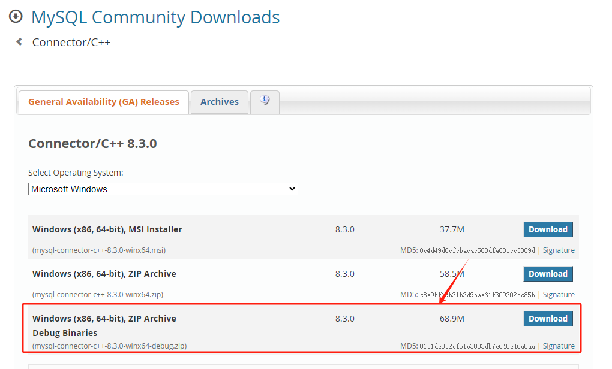

windows下安装mysql
安装Mysql
先介绍Windows环境下安装mysql
点击mysql安装包下载链接：https://dev.mysql.com/downloads/mysql
选择window版本，点击下载按钮，如下所示

不用登录直接下载
下载好mysql安装包后，将其解压到指定目录，并记下解压的目录，后续用于环境变量配置
在bin目录同级下创建一个文件，命名为my.ini 编辑my.ini文件
[mysqld] |
有两点需要注意修改的：
A、basedir这里输入的是mysql解压存放的文件路径
B、datadir这里设置mysql数据库的数据存放目录
打开cmd进入mysql的bin文件下
依次执行命令
第一个命令为：
//安装mysql 安装完成后Mysql会有一个随机密码 |
如下图，随机密码要记住，以后我们改密码会用到 DnRIoT23<(gX
接下来在cmd执行第二条命令
//安装mysql服务并启动 |
如果出现以下情况，说明cmd不是以管理员形式执行的，改用为管理员权限执行即可。
成功如下
目前为止安装完毕，
修改mysql密码
1 在本机启动mysql服务：
点击桌面我的电脑，右键选择管理进去：
点击后选择服务
点击服务后可查看当前计算机启动的所有服务，找到mysql，然后右键点击设为启动，同时也可设置其为自动启动和手动启动
继续在cmd上执行以下命令
mysql -uroot -p |
回车后输入上面安装时保存的初始密码，进入mysql里面：
在mysql里面继续执行以下命令：
//修改密码为123mysql |
回车按照指引执行完后，代表密码修改成功，再输入exit;退出即可
配置环境变量
为了方便使用mysql命令，可以将mysql目录配置在环境变量里
新建系统变量：
变量名：MYSQL_HOME
变量值：msql目录
修改系统的path变量
编辑path，进去后添加 %MYSQL_HOME%\bin
测试连接
为了方便测试，大家可以使用navicat等桌面工具测试连接。以后增删改查也方便。
可以去官网下载
效果如下：
Mysql Connector C++
尽管Mysql提供了访问数据库的接口，但是都是基于C风格的，为了便于面向对象设计，我们使用Mysql Connector C++ 这个库来访问mysql。
我们先安装这个库，因为我们windows环境代码是debug版本，所以下载connector的debug版本，如果你的开发编译用的release版本，那么就要下载releas版本，否则会报错 terminate called after throwing an instance of 'std::bad_alloc'.
因为我在windows只做debug调试后期会将项目移植到Linux端，所以这里只下载debug版
下载地址
https://dev.mysql.com/downloads/connector/cpp/

下载后将文件夹解压放在一个自己常用的目录，我放在D:\cppsoft\mysql_connector
接下来去visual studio中配置项目
VC++ 包含目录添加D:\cppsoft\mysql_connector\include
库目录包含D:\cppsoft\mysql_connector\lib64\vs14
然后将D:\cppsoft\mysql_connector\lib64\debug下的mysqlcppconn8-2-vs14.dll和mysqlcppconn9-vs14.dll分别拷贝到项目中
为了让项目自动将dll拷贝到运行目录，可以在生成事件->生成后事件中添加xcopy命令
xcopy $(ProjectDir)config.ini $(SolutionDir)$(Platform)\$(Configuration)\ /y |